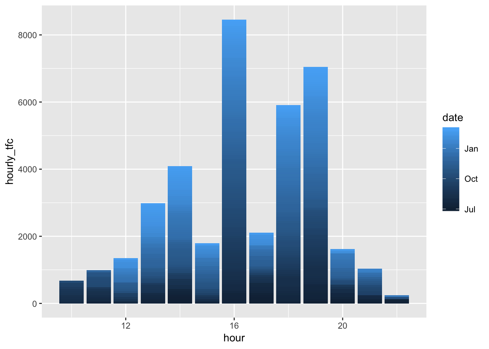

Chapter 3 Multiple Regression
library(tidyverse)## Warning: package 'tibble' was built under R version 3.5.2library(readxl)
library(lubridate)
library(ggplot2)
library(factoextra)cluster_data<-rainy_days %>%
select(date,daily_rainfall_mm, temp_mean_daily, daily_tfc, mean_hourly_tfc)
cluster_data<-cluster_data %>%
column_to_rownames(var = "date")rain<-cluster_data
ols_rain <- lm(daily_tfc ~ daily_rainfall_mm +`30min_rainfall_mm` + max_wind_speed + `120min_rainfall_mm` + wind_speed + temp_mean_daily + mean_hourly_tfc, daily_stats_weather)
glance(ols_rain)## Warning in stats::summary.lm(x): essentially perfect fit: summary may be
## unreliable## # A tibble: 1 x 11
## r.squared adj.r.squared sigma statistic p.value df logLik AIC
## <dbl> <dbl> <dbl> <dbl> <dbl> <int> <dbl> <dbl>
## 1 1 1 3.99e-13 1.70e29 0 8 6570. -13122.
## # … with 3 more variables: BIC <dbl>, deviance <dbl>, df.residual <int>tidy(ols_rain)## Warning in summary.lm(x): essentially perfect fit: summary may be
## unreliable## # A tibble: 8 x 5
## term estimate std.error statistic p.value
## <chr> <dbl> <dbl> <dbl> <dbl>
## 1 (Intercept) 1.95e-12 1.54e-12 1.27e+ 0 0.206
## 2 daily_rainfall_mm -2.47e-15 1.47e-14 -1.68e- 1 0.867
## 3 `30min_rainfall_mm` -7.69e-15 1.63e-14 -4.71e- 1 0.638
## 4 max_wind_speed 2.31e-15 4.77e-15 4.84e- 1 0.628
## 5 `120min_rainfall_mm` 4.35e-15 1.87e-14 2.33e- 1 0.816
## 6 wind_speed 6.66e-15 1.22e-14 5.46e- 1 0.586
## 7 temp_mean_daily -6.58e-14 4.31e-14 -1.53e+ 0 0.128
## 8 mean_hourly_tfc 2.40e+ 1 2.21e-14 1.09e+15 0#Traffic per hour >50 (in anticipation of further regressive analysis that could be done --> checking which hours have peak traffic movements)
tfc_gt_50<-changi_stats %>%
mutate(hourly_tfc = arrival_tfc + departure_tfc) %>%
filter(hourly_tfc >59) %>%
mutate(hour = hour(local_time))
tfc_gt_50 %>%
ggplot(aes(x = hour, y = hourly_tfc)) + geom_col(aes(fill = date))
summary(tfc_gt_50)## local_time arrival_tfc departure_tfc
## Min. :2018-07-01 17:00:00 Min. :22.0 Min. :20.00
## 1st Qu.:2018-09-10 17:00:00 1st Qu.:30.0 1st Qu.:27.00
## Median :2018-11-18 15:00:00 Median :33.0 Median :30.00
## Mean :2018-11-10 03:15:22 Mean :32.7 Mean :29.78
## 3rd Qu.:2019-01-06 20:00:00 3rd Qu.:35.0 3rd Qu.:32.00
## Max. :2019-02-28 17:00:00 Max. :42.0 Max. :39.00
## date hourly_tfc hour
## Min. :2018-07-01 Min. :60.00 Min. :10.00
## 1st Qu.:2018-09-10 1st Qu.:61.00 1st Qu.:14.00
## Median :2018-11-18 Median :62.00 Median :16.00
## Mean :2018-11-09 Mean :62.48 Mean :16.38
## 3rd Qu.:2019-01-06 3rd Qu.:64.00 3rd Qu.:19.00
## Max. :2019-02-28 Max. :72.00 Max. :22.00